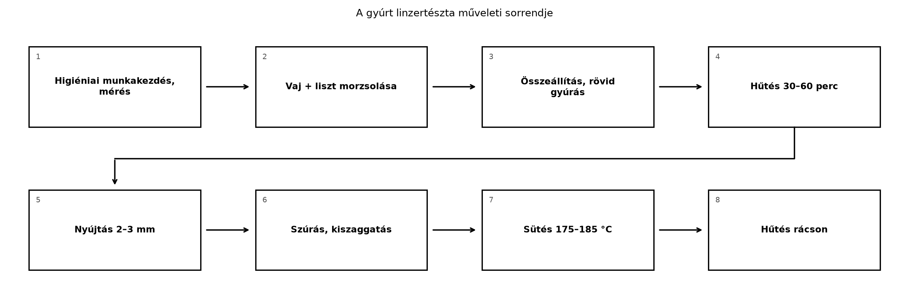

A cukrászműhelyben délelőtt száz db linzerkarikához és tizenkét linzerkosárhoz kell tésztát készítened. Az egyik adag aranysárgán, porhanyósan sül, a másik összeugrik és kemény lesz, mint a kétszersült. A különbség ritkán a recept hibája: legtöbbször a vaj hőmérsékletén, a gyúrás idején és a hűtésen múlik. A gyúrt omlós tészta (linzer) a cukrászat egyik legtöbbször használt félkész terméke: ebből készül a linzerkarika, a lekváros szelet, a tortaalap, a kosárka és a sós aprósütemény is.
Ebben az alfejezetben megtanulod hat linzerváltozat összetételét (sárga, barna, kakaós, angol, fehér és sós), a morzsolás–gyúrás–hűtés–nyújtás–szúrás–kiszaggatás lépéseit, a sütés tájékoztató értékeit, és azt, melyik változatot melyik termékhez válaszd.
Képzeld el, hogy hideg vajat dörzsölsz a lisztbe, és homokszerű morzsát kapsz. Minden lisztszemet vékony zsírfilm von be, ezért a víz alig éri el, és a sikér nem tud összeállni. Az összegyúrt tészta nem rugalmas, hanem „rövid”: ha elhúzod, szakad. Sütéskor ez a szerkezet nem nyúlik és nem húzódik vissza, hanem porhanyósan, egyenletesen elmorzsolódik. Ha viszont a vaj megolvad, vagy túl sokáig gyúrod, a zsírfilm eltűnik, a sikér kifejlődik, és a lap sütés közben összeugrik.
Definíció. A linzertészta olyan gyúrt omlós tészta, amelyben a liszthez viszonyítva nagy a zsiradék- és cukortartalom, a folyadék pedig minimális (csak a tojássárgája és a vaj víztartalma). A tésztát nem kelesztjük, a sikérképződést a zsiradék és a rövid kidolgozás korlátozza.
Definíció. A resztelés (morzsolás) a hideg zsiradék és a liszt összedolgozása homokszerű morzsává, mielőtt a többi anyagot hozzáadjuk (részletesen: Zsiradékkal lazítás és az omlós tészták csoportosítása).
A hat változat az összetétel alapján különül el:
Mérd ki az összes anyagot mérlegen. A vajat és a tojássárgáját hidegen (kb. 4–8 °C) használd, a lisztet és a porcukrot szitáld át. Az eszközök és a pult legyenek hűvösek. Meleg műhelyben a márványlap vagy a hűtött tál sokat segít.
A hideg vajat kockákra vágva a lisztbe dolgozod ujjbeggyel vagy gépen (lapátfeltét, rövid ideig), amíg a keverék homokszerű, morzsás. Miért? A zsiradékkal bevont lisztszemek nem tudnak vizet felvenni, ezért a sikérháló alig alakul ki. Kézzel gyorsan dolgozz, a tenyered ne melegítse a vajat.
Add hozzá a porcukrot, a sót, az ízesítőt, majd a tojássárgáját (vagy más folyékony anyagot). Csak addig gyúrd, amíg a tészta éppen összeáll. Miért? Minden további mozdulat sikért fejleszt, és a tészta nyúlóssá, a lap sütés után keménnyé válik. Ha a tészta még „foltos”, jobb egyszer a deszkán tenyérrel elmaszatolni (fraszírozás), mint tovább gyúrni.
A tésztát lapítsd korongra vagy téglalapra, csomagold fóliába, és hűtsd 30–60 percig (4–6 °C; tanulási példa, ellenőrizendő: üzemi előírás). Miért? A vaj visszadermed, a nedvesség egyenletesen eloszlik, a sikér „ellazul”, így a nyújtott lap sütéskor kevésbé zsugorodik.
A tésztát hideg felületen, kevés liszttel nyújtsd 2–4 mm vastagságúra (linzerkarikához 2–3 mm, tortaaljhoz és kosárkához 3–4 mm). A lisztet ne mozgasd túl sokat, mert a sok lisztezés kiszárítja a tésztát. Ha a tészta ragad, tedd vissza 10 percre a hűtőbe. A tésztát két sütőpapír között is nyújthatod, így kevesebb liszt kell.
A tortaalapnak szánt lapot villával vagy tüskés hengerrel szurkáld meg (a gőz elszökik, a lap nem hólyagosodik). A kiszaggatást határozott, függőleges mozdulattal végezd; a kiszúrókat időnként mártsd lisztbe. A maradékot gyorsan, egyszer gyúrd össze, és nyújtsd újra: a többszöri újragyúrás megkeményíti a tésztát. Az újranyújtott darabokat ezért az „első osztályú” termékekhez ne használd.
A sütőpapíros lemezre helyezett darabokat előmelegített sütőben süsd. A sütési hőmérséklet és idő tájékoztató, a sütő típusától és a vastagságtól függ:
| Változat | Hőmérséklet (°C) | Idő (perc) | Megjegyzés |
|---|---|---|---|
| Sárga linzer (karika, lap) | 175–185 | 10–14 | aranysárga szél |
| Barna linzer | 170–175 | 12–15 | a mag miatt gyorsabban sötétedik |
| Kakaós linzer | 170–175 | 12–15 | a színről nehéz megítélni; illatra és tapintásra ellenőrizz |
| Angol linzer | 150–160 | 20–25 | lassan, szinte színtelenül sül |
| Fehér linzer | 160–170 | 12–15 | ne kapjon színt |
| Sós linzer | 180–190 | 10–15 | a sajt miatt barnul |
A táblázat tanulási példa, nem előírás (ellenőrizendő: gyártói utasítás, saját sütő próbasütése).
A forró lap puha és törékeny. Hagyd 2–3 percig a lemezen, majd palettával óvatosan tedd rácsra, és ott hűtsd ki teljesen. A kihűlt lapokat száraz, légmentes dobozban tárold. Töltésre, lekvározásra, bevonásra csak teljesen kihűlt lapot használj, mert a meleg lap a töltelékből vizet vesz fel, és megpuhul.
| Félkész termék | Jellemző változat | Felhasználás |
|---|---|---|
| Lapok, karikák | sárga, kakaós | linzerkarika, lekváros szelet, teasütemény |
| Tortaalap (vakon sütött) | sárga, barna | gyümölcstorta, linzertorta alapja |
| Kosárka, tartlet | sárga, fehér | gyümölcsös vagy krémes kosárka |
| Rúd, pogácsa | sós | sós teasütemény, fogadási apró |
| Törékeny, vajas keksz | angol | teasütemény, desszert mellé |
Szabály. Nedves töltelék (krém, gyümölcs) alá a lapot vakon süsd (töltelék nélkül), és szükség esetén vékony kakaóvaj- vagy csokoládéréteggel szigeteld. Így az alap nem ázik át.
Jogszabály. Az élelmiszer-higiéniai alapkövetelményeket a 852/2004/EK rendelet rögzíti: tiszta eszközök és felületek, személyi higiénia, nyersanyagok megfelelő tárolása. A linzer allergénjei: glutén (búzaliszt), tej (vaj, tejföl), tojás; a barna változatnál olajos magvak (dió, mogyoró, mandula) is. Ezeket az 1169/2011/EU rendelet szerint a késztermék jelölésénél, illetve a vendég tájékoztatásakor fel kell tüntetni (ellenőrizendő: a hatályos magyar végrehajtási előírás és a termék értékesítési módja). A hűtési és sütési hőfokok az üzem HACCP-tervéhez igazodnak (ellenőrizendő).
Készíts sárga linzertésztát, nyújtsd és szaggasd ki, süsd meg, és értékeld a kész lapokat.
Biztonsági korlát. A gépi keverőt csak oktatás után és felügyelet mellett használd; tisztítás előtt áramtalaníts. A forró lemezt kesztyűvel fogd. A kiszúrók éle éles, óvatosan mozgasd.
Tiszta munkaruha, hajháló, rövid, ékszer nélküli kéz, alapos kézmosás. Tiszta eszközök és felületek; a nyers tojássárgájás tésztát ne kóstoltasd, és az eszközöket a munka végén azonnal mosd el.
Technológiai lap. Termék: sárga linzertészta (félkész termék), kisütve linzerkarika-lapnak. Termékcsoport: gyúrt omlós tészta. Alapmennyiség: 623 g nyers tészta.
Termék neve, termékcsoport, alapmennyiség: sárga linzertészta, gyúrt omlós tészta, 623 g.
Anyaghányad (sárga linzer):
| Nyersanyag | Mennyiség (g) | Arány (%) | Megjegyzés |
|---|---|---|---|
| Finomliszt | 300 | 48,2 | gyenge-közepes sikértartalmú, szitálva |
| Vaj | 200 | 32,1 | hideg, 4–8 °C |
| Porcukor | 100 | 16,1 | szitálva |
| Tojássárgája | 20 | 3,2 | hideg, kb. 1 db |
| Só | 1 | 0,2 | finom szemű |
| Citromhéj, reszelt | 2 | 0,3 | vagy vaníliás cukor |
| Összes | 623 | ≈ 100 | a százalékok kerekítés miatt 100,1-re adódnak |
| Nyersanyag | Sárga | Barna | Kakaós | Angol | Fehér | Sós |
|---|---|---|---|---|---|---|
| Finomliszt | 300 | 250 | 270 | 250 | 300 | 300 |
| Őrölt olajos mag (pirított) | – | 50 | – | – | – | – |
| Kakaópor | – | – | 30 | – | – | – |
| Étkezési keményítő vagy rizsliszt | – | – | – | 50 | – | – |
| Vaj | 200 | 200 | 200 | 240 | 190 | 180 |
| Porcukor | 100 | 100 | 100 | 80 | 100 | – |
| Tojássárgája | 20 | 20 | 20 | – | – | 20 |
| Tojásfehérje | – | – | – | – | 30 | – |
| Reszelt kemény sajt | – | – | – | – | – | 60 |
| Tejföl | – | – | – | – | – | 40 |
| Só | 1 | 1 | 1 | 1 | 1 | 5 |
| Ízesítő (citromhéj) | 2 | – | – | – | – | – |
| Összesen | 623 | 621 | 621 | 621 | 621 | 605 |
A változatok közötti összetételeket tanulási példaként adtuk meg; az üzemi receptúra eltérhet (ellenőrizendő).
Eszközök és gépek: mérleg, tál vagy keverőgép lapátfeltéttel, szita, nyújtófa, kiszúrók, villa, sütőlemez, sütőpapír, hűtő, sütő, rács.
Műveleti sorrend:
Kritikus pontok: a nyers tojássárgájás tészta fogyasztása tilos; a sütésnek el kell érnie a 75 °C maghőmérsékletet (tanulási példa, ellenőrizendő: HACCP-terv). A tészta hűtés nélküli tárolása legfeljebb 30 perc (ellenőrizendő). A hűtés 4–6 °C között tartandó.
Allergének: glutén, tej, tojás; a barna változatnál olajos magvak. Az olajos magvak keresztszennyeződést okozhatnak: külön eszközt használj, és az üzemi szabály szerint jelöld.
Minőségi jellemzők: egyenletes vastagság és szín, aranysárga szél, omlós, nem kemény törés, vajas íz, nem égett, nem hólyagos.
Tárolás, eltarthatóság: a nyers tészta fóliában hűtve 2–3 nap, fagyasztva akár 1–2 hónap (ellenőrizendő: üzemi előírás); a kisült lap száraz, zárt dobozban, 20 °C alatt 5–7 nap (ellenőrizendő).
A műveleti sorrendet az alábbi folyamatábra foglalja össze.

Az eszközöket mosogasd el, a gépet áramtalanítás után tisztítsd meg, a felületeket fertőtlenítsd. A technológiai lapon rögzítsd a tészta hőmérsékletét, a hűtés idejét, a sütés hőfokát és idejét, valamint az érzékszervi értékelést.
Számítás. A sárga linzer alaphányadában 300 g liszthez 200 g vaj és 100 g porcukor tartozik. Mennyi a vaj és a cukor aránya a liszthez képest?
Ez a klasszikus 3 : 2 : 1 arány (liszt : vaj : cukor). Az összes tömeg: . ∎
Számítás. Egy darab linzerkosárkához 12 g nyers tészta kell, a sütési veszteség 8% (tanulási példa). Mennyi a kisült kosárka tömege?
∎
Hiba. Tünet: a kiszaggatott linzerkarikák sütés közben összeugranak, a szélük behúzódik, a lap kemény. Hipotézis: meleg tészta, túlgyúrás vagy kimaradt pihentetés. Ellenőrzés: a nyers tészta tapintásra meleg és rugalmasan visszaugrik; a gyúrási idő hosszú volt. Ok: a zsírfilm elolvadt, a sikér kifejlődött. Javítás: ha a tészta még nyers, tedd hűtőbe legalább 30 percre, és nyújtás előtt hagyd pihenni; a már megsült lapon nem lehet javítani. Megelőzés: hideg anyagok, rövid kidolgozás, pihentetés.
A tanuló 100 db linzerkarikához készített tésztát egy meleg délelőtti műhelyben. A vajat a pulton hagyta, a tésztát hosszan gyúrta, mert foltos maradt, és a hűtést kihagyta, mert sietett. A kiszaggatott karikák a lemezen összeugrottak, a szélük behúzódott, a tészta kemény lett; a selejtet naplózták. A következő adagnál a vajat hidegen tartotta, a tésztát csak az összeállásig gyúrta, 45 percig hűtötte, és hideg márványlapon nyújtotta. A karikák alakja megmaradt, a tészta porhanyós lett. A tanulság: a linzernél a hőmérséklet és a kidolgozás ideje fontosabb, mint a recept pontos betűje.
1. feladat (A)
Sorold fel a hat linzerváltozatot, és mindegyiknél adj meg egy jellemző
összetevőbeli különbséget a sárga linzerhez képest.
2. feladat (A)
A sárga linzerben 300 g liszthez 200 g vaj tartozik. Mennyi a vaj aránya
a liszthez képest százalékban?
3. feladat (B)
1200 g sárga linzertésztát kell készíteni kosárkákhoz. Számítsd ki a
szorzószámot és az egyes nyersanyagok mennyiségét (a tojássárgája, só és
citromhéj mennyiségét is).
4. feladat (B)
Egy linzerkosárka 12 g nyers tésztából készül. Hány kosárka készíthető
egy 623 g-os alapadagból, és mennyi lesz a teljes adag kisült tömege 8%
veszteséggel?
5. feladat (C)
Egyik tanulótársad a tésztát hosszan gyúrta, és a lapok sütés közben
összeugrottak. Magyarázd el, mi történt, és hogyan előzhető meg.
6. feladat (D)
Készíts egy alapadag sárga linzertésztát, süsd meg, töltsd ki a
technológiai lapot, és értékeld a lapokat a minőségi szempontok szerint.
Írd le az eltéréseket és azok okát.
1. feladat (A)
Sárga: alapváltozat. Barna: olajos mag a liszt egy része helyett.
Kakaós: kakaópor a liszt egy része helyett. Angol: több vaj, keményítő
vagy rizsliszt, tojás nélkül. Fehér: tojásfehérje a sárgája helyett.
Sós: cukor nélkül, sajttal, tejföllel, több sóval.
2. feladat (A)
Adott:
,
.
Képlet:
.
Behelyettesítés:
.
Ellenőrzés:
.
∎
3. feladat (B)
Szorzószám:
.
- Liszt:
- Vaj:
- Porcukor:
- Tojássárgája:
- Só:
;
citromhéj:
Ellenőrzés: pontos értékek összege 1200 g; a kerekített értékeké 1201 g, a különbség kerekítésből adódik. ∎
4. feladat (B)
Darabszám:
,
tehát 51 kosárka készíthető (a maradék 11 g tészta nem elég egy
újabbra). A teljes adag kisült tömege:
.
Egy kisült kosárka:
.
∎
5. feladat (C)
A hosszú gyúrás és a tészta felmelegedése miatt a zsírfilm elolvadt, a
liszt a folyadékot felvette, és a sikér kifejlődött. A rugalmas
sikérháló sütéskor visszahúzódik, a lap összeugrik és kemény lesz.
Megelőzés: hideg vaj, rövid gyúrás (csak az összeállásig), pihentetés
hűtőben nyújtás előtt.
6. feladat (D)
Értékelési szempontok: homokszerű morzsa, hideg és nem ragadó tészta,
nyújtáskor nem szakad, kisülve nem zsugorodik, törésfelülete egyenletes
és omlós, színe aranysárga. A technológiai lapon rögzítsd a tészta
hőmérsékletét, a hűtési időt, a tényleges sütési hőfokot és időt, és az
eltérések okát.
A linzertészta gyúrt omlós tészta: hideg vajat morzsolunk a liszttel, a többi anyagot csak az összeállásig dolgozzuk hozzá, majd hűtjük, nyújtjuk, kiszaggatjuk és sütjük. A hat változat: sárga (alap, 3 : 2 : 1 arányú liszt : vaj : cukor), barna (olajos maggal), kakaós, angol (több vaj, keményítővel, tojás nélkül), fehér (tojásfehérjével) és sós (sajttal, cukor nélkül). A sütés jellemzően 150–190 °C, a változattól és vastagságtól függően 10–25 perc (tanulási példa, ellenőrizendő). A leggyakoribb hibák: zsugorodás, keménység, morzsálódás és hólyagosodás; okuk meleg anyag, túlgyúrás vagy kimaradt pihentetés. Továbbvitt eredmény. A linzerlapok, tortaalapok és kosárkák a későbbi alfejezetekben (uzsonnasütemények, teasütemények, omlós torták) kiinduló félkész termékek.